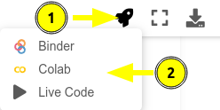

Cuántica I¶
Este es un manual de ejercicios para la asignatura de Química Cuántica I, particularmente contiene jupyter notebooks acorde al temario del curso (1404) impartido en la Facultad de Química de la Universidad Nacional Autónoma de México.
Ejecución de los notebooks¶
En línea (recomendada)¶
Los ejercicios de este libro requieren un conocimiento muy básico de Python, mismo que puede adquirirse en el primer capítulo del libro. Los notebooks pueden ejecutarse en línea desde Google Colab al presionar el ícono de la nave y dar clic sobre Colab, este ícono aparece en la parte superior de cada notebook. Los archivos generados en Google Colab se guardan automáticamente en su Google Drive.

En computadora¶
También puede descargar los .ipynb y ejecutarlos directamente en su computadora dando clic sobre el botón con la flecha apuntando hacia abajo. Esto requiere una instalación previa de Python, en caso de no tenerla puede instalar Anaconda. Las librerías necesarias para ejecutar los notebooks se pueden instalar con la siguiente línea:
conda install matplotlib numpy scipy sympy
Puede ejecutar un notebook con
jupyter notebook Ejercicio_n.ipynb
Algunos ejercicios utilizan el software psi4, este se puede instalar desde anaconda con
conda install psi4 psi4-rt python=3.7 -c psi4